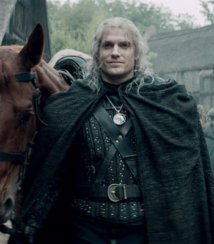
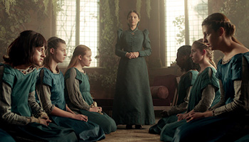
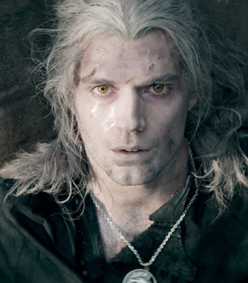
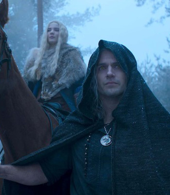
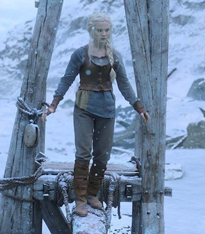
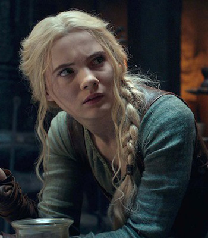
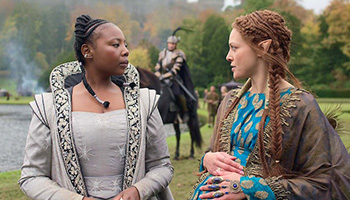
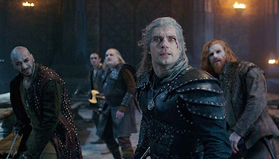

Story
Synopsis
The story begins with Geralt of Rivia, Crown Princess Ciri of Cintra, and the sorceress Yennefer of Vengerberg at different points of time, exploring formative events that shape their characters throughout first season, before eventually merging into a single timeline.
Geralt and Ciri are linked by destiny since before she was born when he unknowingly demanded her as a reward for his services by invoking "the Law of Surprise". After the two finally meet, the witcher becomes the princess's protector and must help her and fight against her various pursuers to prevent her Elder Blood and powerful magic from being used for malevolent purposes and keep Ciri and their world safe.
Season
- Season 1 (2019)
- The first season is based on The Last Wish and Sword of Destiny, which are collections of short stories that precede the main Witcher saga. Watch Now
- Season 2 (2021)
- The second season is based on "A Grain of Truth" from The Last Wish, Blood of Elves, and the beginning of Time of Contempt. Watch Now
Gallery
-

SEASON 1 EPISODE 1
The End’s Beginning -

SEASON 1 EPISODE 2
Four Marks -
SEASON 1 EPISODE 3
Betrayer Moon
-
SEASON 1 EPISODE 5
Bottled Appetites -

SEASON 1 EPISODE 8
Much More
-

SEASON 2 EPISODE 1
A Grain of Truth -

SEASON 2 EPISODE 3
What Is Lost
-

SEASON 2 EPISODE 5
Turn Your Back -

SEASON 2 EPISODE 6
Dear Friend... -

SEASON 2 EPISODE 8
Family